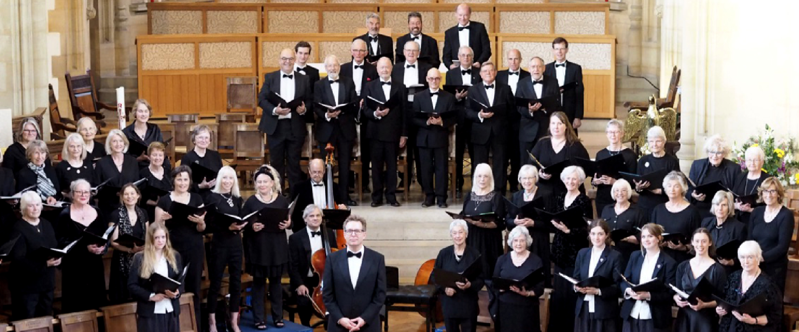

We are a mixed voice choir who have been in existence for over 100 years. We draw our membership from a fairly wide rural area and currently have approximately seventy voices who meet for rehearsals every Monday during term time.
Although we are an independent choral society, we have close links with Oundle School with whom we often perform and who regularly support our concerts. Our rehearsals are held in Laxton Junior School Hall, East Road, Oundle, PE8 4BX, from 7.30pm until 9.30pm.
There is no requirement to audition and all singers are made welcome no matter what skill level you have. We are grateful to Oundle Town Council for their continuing financial support but, much like most societies, we are a registered charity and are obliged to charge a subscription fee. However, don’t let that stop you from coming along to see if you like us!
If you are interested in joining our society please contact us for more information by telephoning/emailing using the details below.
Registered charity number: 1098947


Chairman : Jane Piercy-Hughes
Treasurers: John Davies
Secretary: Janer Ollerenshaw
Legal: John Davies
Website: Tessa Leuchars

— Anne
"ODCS is the most friendly, relaxed and enjoyable choral society I have ever belonged to."— Trisha
"I love the thrill of singing in 4-part harmony. It gives me that tingling feeling!"—Clare
" Singing is the perfect form of exercise and relaxation, focussing your mind, whatever the day has thrown at you!"—Tessa
Spring 2023 - Karl Jenkins' The Armed Man and Rutter's Requiem
Autumn 2022 - Magnificat in D Major - J.S Bach and Mass in G Major - Franz Schubert
Spring 2022 - Dvorak's Mass in D Minor, Vaughan Williams' Five Mystical Songs and Arensen's Eja Mater
Autumn 2019 - Britten - St Nicolas, Chilcott - Time of Snow Mid Winter, Whitacre - Lux Aurumque, Rutter - Nativity, Candlelight & Shepherds Pipe Carols.
Spring 2019 - Vivaldi GLORIA & Tippett 'Five Spirituals
Autumn 2018 - G.F. Handel - Messiah Part 1
Spring 2018 - Gioacchino Rossini’s - Petite Messe Solennelle
Autumn 2017 - Benjamin Britten's - A Ceremony of Carols
Spring 2017 - Handel’s Israel in Egypt - A joint concert with Uppingham Choral Society and the Bardi Orchestra on Saturday 8th April 2017 in Uppingham
Spring 2016 - Creation by F. J. Haydn
Spring 2015 - Mass in C Minor K.427 by Mozart
Spring 2014 - Now is the Month of Maying - A Concert for May Day!
Autumn 2013 - The Nelson Mass by F. J. Haydn
Spring 2013 - Messe Solennelle by Louis Vierne (Oundle School Chapel)
Autumn 2012 - Messiah by G F Handel
Spring 2012 - The Music Makers by Edward Elgar (Peterborough Cathedral with Oundle School)
Autumn 2011 - Messa di Gloria by Giacomo Puccini
Spring 2011- Requiem by W. A. Mozart
Janet Ollerenshaw - Secretary or Phone 07979332744